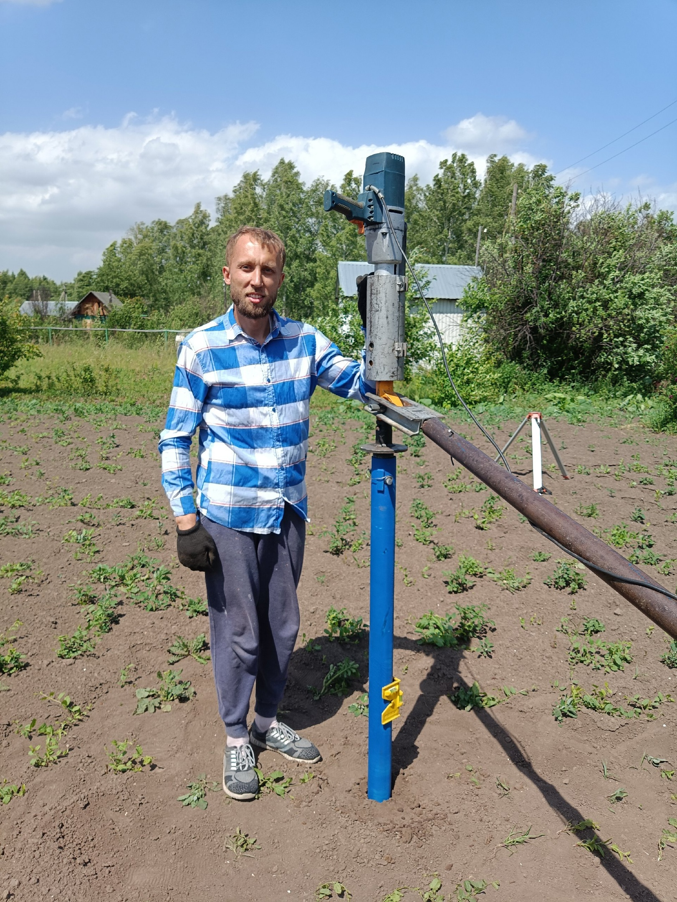

О продукте

Мы осуществляем монтаж винтовых свай уже более 6 лет и хотим поделиться с Вами нашими наработками. Наш сваекрут изготовлен на основе усиленного (самого мощного в своем классе на рынке в России) планетарного редуктора ROCKFORCE RF-34114102 типа "мясорубка" с крутящим моментом 6800 Нм и передаточным число 1:78. Данный сваекрут позволяет осуществлять монтаж свай в мягкие/пучинистые грунты. Оптимальный диаметр свай для монтажа - 57, 76, 89.
Плюсы и минусы
У нашего сваекрута, как и у любого инструмента имеется ряд преимуществ и недостатков.
Отметим преимущества- Доступная цена. Цена сваекрута в стандартной комплектации на данный момент составляет 50.000 рублей. Для сравнения цена на промышленные решения начинается от 300.000 рублей - это например редуктор AVVI, или гидравлический сваекрут типа "Геркулес". Ямобур на базе грузовика начинается от 3.000.000 рублей за "уставший" вариант.
- Быстрый срок окупаемости, как следствие пункта №1. В среднем по рынку монтаж одной сваи оценивается в 1700 рублей. Следовательно сваекрут окупается менее чем за 30 свай. А это - всего 1-2 заказа.
- Очень простой процесс сборки-разборки.
- Компактность - можно осуществлять монтаж свай внутри построек.
- Монтаж свай в труднодоступных местах - наш портативный сваекрут закрутит там, где не подъедет крупная установка.
- Для монтажа свай требуется бригада из 2-3 человек.
- Не подходит для плотных грунтов, песка, а также при наличии мусора в почве(бетон, кирпичи, металл). В таких случаях редуктор может быстро выйти из строя.
Комплектация
- Двухскоростная дрель Rebir 2000вт.
- Редуктор Rockforce RF-34114102 1:78 со старых поставок.
- Кожух для соединения и фиксации редуктора и дрели.
- Отвод для присоединения реактивной тяги
- 3 головки - для монтажа 57, 76, 89 свай
- Палец для фиксации сваи в головке